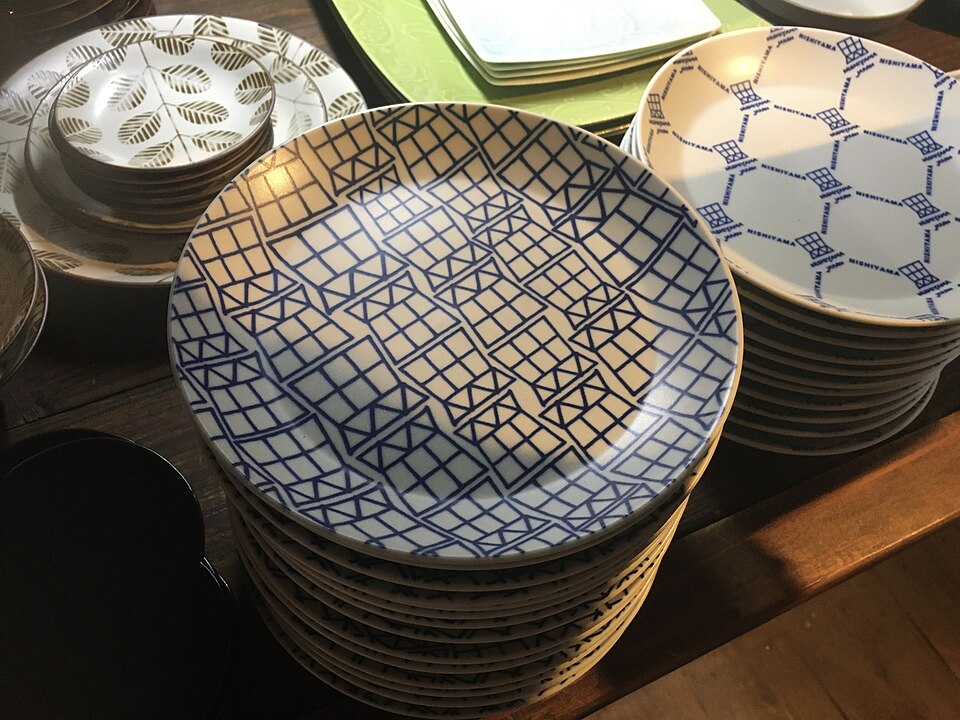
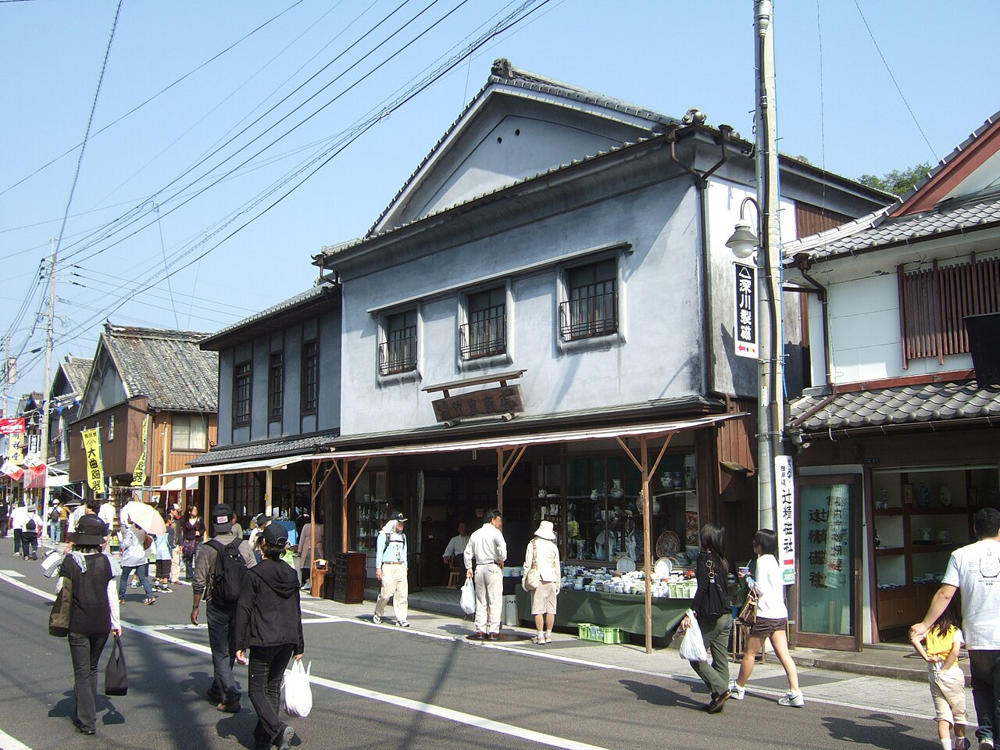
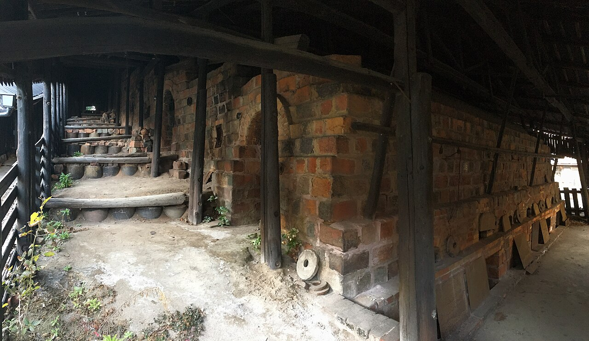

会場案内図A〜E 41軒瀬戸ノ口陶器市
2027年5月3日・4日月曜・火曜の祝日に開きます
行き方を調べる写真：有田陶器市（Atsasebo, CC BY-SA 3.0）・波佐見焼の皿（Nesnad, CC BY 4.0）・
常滑の登り窯（Gryffindor, CC BY-SA 4.0）／Wikimedia Commons
開催概要
| 日時 | 2027年5月3日（月・祝）9:00〜16:00 2027年5月4日（火・祝）9:00〜15:00 |
|---|---|
| 会場 | 瀬戸ノ口駅前広場・本町通り・窯垣の小径・旧瀬戸ノ口小学校・登り窯跡広場（岐阜県瀬戸ノ口町） |
| 出店 | 窯元41軒（うち初出店3軒） |
| 入場 | 無料（臨時駐車場は駐車協力金 1日500円） |
| 雨天時 | 小雨決行。荒天時は中止し、各日6:30に判断します |
| 主催 | 瀬戸ノ口陶器市実行委員会（事務局：瀬戸ノ口町商工会） |
会場マップ
駅前広場（A）から登り窯跡広場（E）まで、歩いて12分ほどです。番号を押すと、その窯元の値札が出ます。
地図は横に動かせます。
地図の番号を押してください
出店窯元
41軒の窯元が出店します。番号は会場マップの番号、値段は各窯元のいちばん安い器の目安です。
「回る」を押すと、駅から歩く順に並べ直します。
イベント
登り窯の窯出しは3日の朝だけです。4日は15時に終わり、14時半から一部の窯元で値下げがあります。
雨天時に変わる内容は赤字で書いています。
写真：Gryffindor／Wikimedia Commons／CC BY-SA 4.0
アクセス・駐車場
昨年は3日の10時40分から13時10分まで、P1 が満車になりました。
お車の方は、10時前か午後のご来場をおすすめします。
| 駐車場 | 台数 | 会場まで |
|---|---|---|
| P1 運動公園 | 420台 | シャトルバス 6分（12分おき・無料） |
| P2 町役場 | 85台 | 徒歩4分。車いす・ベビーカーの方を優先します |
| P3 旧JA倉庫跡 | 160台 | 徒歩9分 |
駐車協力金は1日500円です（P1〜P3 共通）。会場周辺の道路は、2日とも8:00〜17:00に車両通行止めになります。
お買い上げの器は、駅前の本部から宅配便で送れます（送料は大きさと地域で変わります）。駅のコインロッカーは12個です。
雨天時のご案内
開催の判断は各日6:30に、このページの上部とメールでお知らせします。
お電話でのお問い合わせは7:00から受け付けます。
| 天気 | どうなるか |
|---|---|
| 小雨・曇り | 開催。地図のとおり |
| 雨が続く | 開催（一部変更）。C・D・E を屋内へ。窯出し・小径歩きは中止 |
| 町に大雨・暴風の警報 | 中止。翌日の開催はその日の 6:30 に判断 |
| 変わること | くわしく |
|---|---|
| 窯元の場所 | C・D の17軒は旧瀬戸ノ口小の体育館（入口で靴袋を配ります）、E の4軒は公民館へ。A・B の20軒はそのまま |
| バスと体験 | シャトルバスは8分おきに。絵付け・箸置きづくりは公民館の和室で |
| 持ち帰り | 各窯元が新聞紙で包みます。本部で大きなビニール袋を1枚10円で |
メールでのお知らせ
前日の夕方と当日6:30に、雨天時の判断・駐車場の混み具合・窯出しの時刻をお送りします。
お送りするのは開催の2日間と前日だけ、多くて4通です。